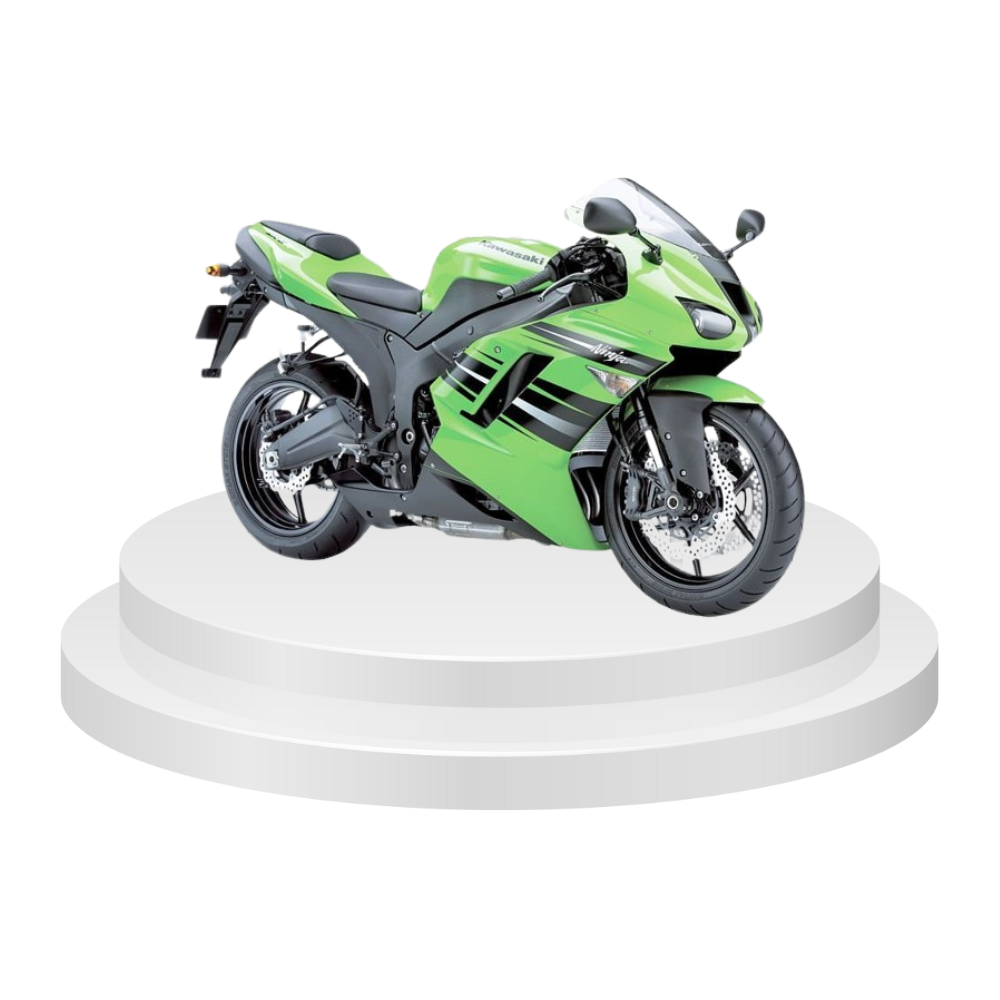
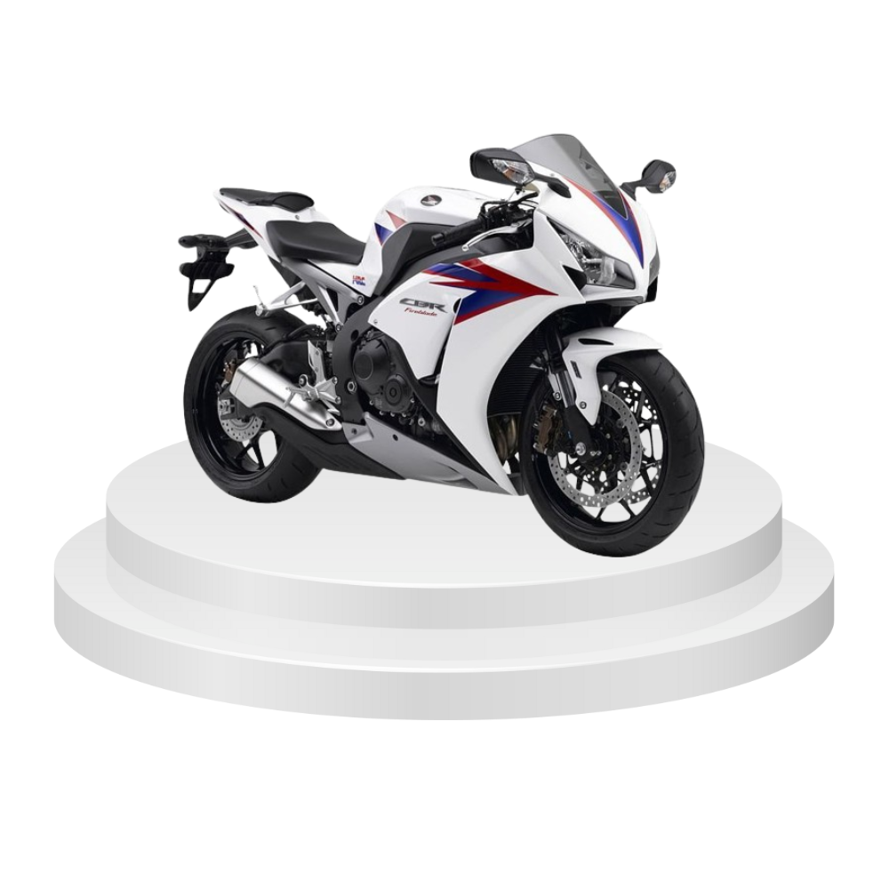
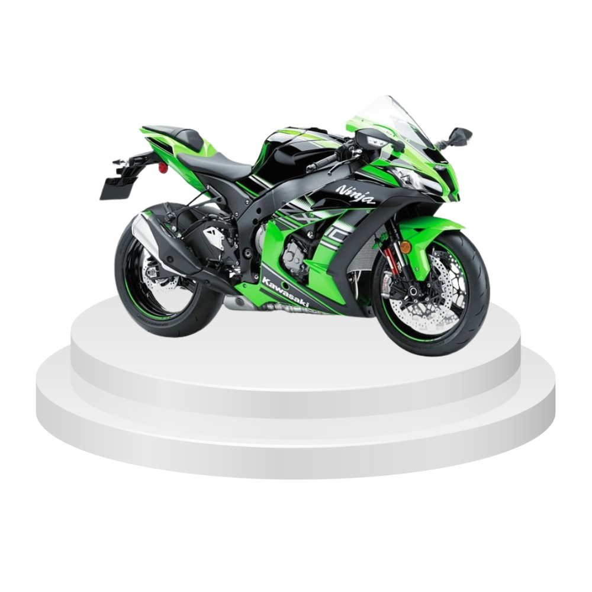
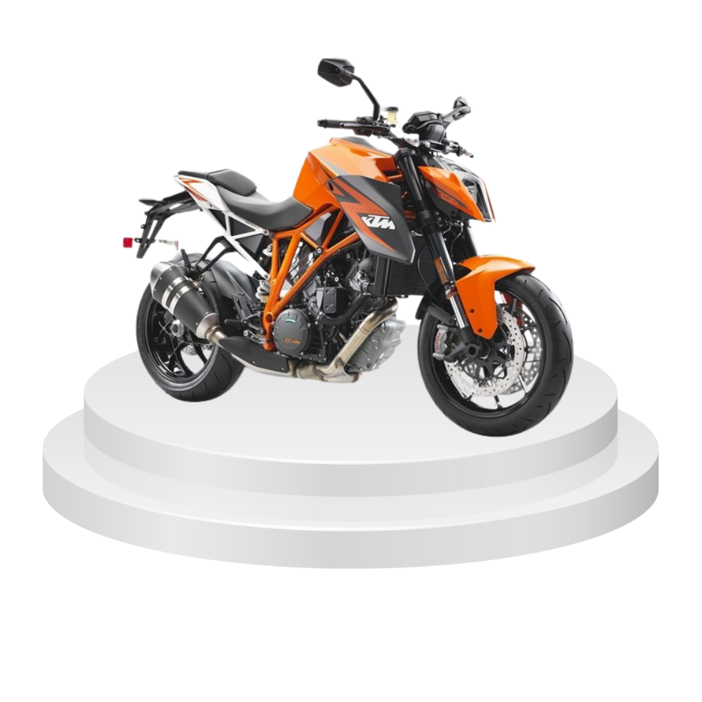

Keterangan: Yamaha YZF-R6 adalah motor supersport yang dirancang untuk memberikan performa tinggi di lintasan balap. Dikenal karena kelincahan dan kecepatannya, YZF-R6 menjadi pilihan populer di dunia balap.
Detail Mesin: Mesin 599 cc, empat silinder segaris, pendingin cairan memberikan kombinasi daya tinggi dengan respons yang lincah. Desain mesin yang ringan memberikan keunggulan dalam manuver di lintasan.
Fitur Tambahan: Sasis ringan aluminium, sistem kontrol traksi yang dapat disesuaikan, dan desain aerodinamis yang optimal untuk mencapai kecepatan tinggi.
Teknologi Balap: Yamaha YZF-R6 dilengkapi dengan teknologi balap terkini, termasuk quick-shifter untuk perpindahan gigi tanpa kopling, memberikan pengalaman balap yang serba cepat.
Chassis Ringan: Chassis yang ringan dan terbuat dari aluminium memberikan keunggulan dalam manuver dan stabilitas di tikungan.
Digital Display: Panel instrumen digital memberikan informasi penting dengan jelas, termasuk data telemetri balap untuk analisis kinerja.

Kawasaki Ninja ZX-10R
Kategori: Superbike
Keterangan: Kawasaki Ninja ZX-10R adalah superbike yang terkenal dengan performa tinggi dan teknologi canggih. Mesinnya yang bertenaga tinggi, suspensi yang dapat diatur, dan fitur-fitur elektronik membuatnya cocok untuk balap lintasan.
Detail Mesin: Mesin 998 cc, empat silinder segaris, pendingin cairan memberikan kombinasi daya dorong dan respons gas yang cepat. Mesin ini sering dilengkapi dengan teknologi terkini untuk meningkatkan efisiensi dan performa.
Fitur Tambahan: Selain fitur utama yang disebutkan sebelumnya, Ninja ZX-10R sering dilengkapi dengan quick-shifter untuk perpindahan gigi yang cepat, sistem pengendalian slide untuk meningkatkan kontrol pada keluar tikungan, dan mode berkendara yang dapat diprogram.
Handling Superior: Kawasaki Ninja ZX-10R dikenal karena penanganan superior di lintasan balap. Suspensi yang dapat diatur memungkinkan pengendara menyesuaikan setelan untuk kondisi jalan dan preferensi pribadi.
Desain Aerodinamis: Desain aerodinamis bodi membantu memaksimalkan stabilitas pada kecepatan tinggi, memberikan pengendara kepercayaan diri dalam mengejar waktu putaran terbaik.
Sistem Pengereman: Sistem pengereman canggih dengan kaliper rem Brembo memberikan kontrol dan keamanan ekstra pada kecepatan tinggi.

Honda CBR1000RR
Kategori: Superbike
Keterangan: Honda CBR1000RR adalah superbike yang dikenal dengan kombinasi performa tinggi dan kontrol yang presisi. Dirancang untuk memberikan pengalaman balap yang luar biasa di lintasan.
Detail Mesin: Mesin 999 cc, empat silinder segaris, pendingin cairan memberikan daya tinggi dan respons yang cepat. Varian SP sering dilengkapi dengan komponen berkualitas tinggi untuk meningkatkan performa.
Fitur Tambahan: Mode berkendara yang dapat diprogram, sistem pengereman ABS yang canggih, dan desain aerodinamis yang dioptimalkan untuk kecepatan tinggi.
Mode Berkendara: Honda CBR1000RR menawarkan mode berkendara yang dapat diprogram, memungkinkan pengendara mengadaptasi performa motor sesuai dengan kebutuhan dan preferensi pribadi.
Aerodinamika Canggih: Desain aerodinamis yang canggih membantu mengarahkan aliran udara dengan baik, meningkatkan stabilitas pada kecepatan tinggi.
Frame Twin-Spar: Struktur rangka twin-spar aluminium memberikan kekakuan yang optimal, mendukung manuver yang akurat di lintasan.

Kawasaki Ninja ZX-14
Kategori: Sport Touring / Muscle Bike
Keterangan: Kawasaki Ninja ZX-14 menggabungkan elemen sport touring dan muscle bike, memberikan kombinasi kecepatan dan kenyamanan. Cocok untuk perjalanan jarak jauh sambil tetap menawarkan performa tinggi.
Detail Mesin: Mesin 1,441 cc, empat silinder segaris, pendingin cairan memberikan daya dorong yang kuat untuk pengalaman berkendara yang mendalam.
Fitur Tambahan: Suspensi yang nyaman, sistem pengereman canggih dengan ABS, dan teknologi elektronik seperti kontrol traksi dan mode berkendara membuatnya sesuai untuk berbagai kondisi perjalanan.
Touring Friendly: Meskipun memiliki performa tinggi, Kawasaki Ninja ZX-14 juga dirancang untuk kenyamanan touring. Suspensi yang nyaman dan posisi duduk yang lebih tegak membuatnya cocok untuk perjalanan jarak jauh.
Fitur Elektronik: Sistem kontrol traksi dan mode berkendara memberikan fleksibilitas dalam mengatasi berbagai kondisi jalan, baik dalam situasi touring maupun berakselerasi di lintasan balap.
Desain Agresif: Desain bodi yang agresif mencerminkan karakter sport dan kekuatan motor ini.

KTM 1290 Super Duke R
Kategori: Hypernaked / Superbike
Keterangan: KTM 1290 Super Duke R adalah representasi dari hypernaked bike yang menggabungkan kekuatan mesin besar dengan desain yang agresif. Cocok untuk pengendara yang mencari sensasi berkendara yang intens.
Detail Mesin: Mesin 1,301 cc, V-twin, pendingin cairan memberikan torsi yang besar dan daya dorong yang kuat. Elektronika canggih memberikan kontrol optimal.
Fitur Tambahan: Kontrol traksi yang dapat disesuaikan, sistem kontrol wheelie, suspensi canggih, dan desain yang mencerminkan karakter agresif KTM.
Ergonomi Agresif: KTM 1290 Super Duke R memiliki posisi duduk yang agresif dan ergonomi yang mendukung gaya berkendara yang dinamis dan penuh adrenalin.
Torsi Besar: Mesin V-twin memberikan torsi yang besar pada rentang putaran mesin rendah hingga menengah, memberikan pengendara akselerasi yang kuat.
Connectivity: Beberapa model KTM dilengkapi dengan fitur konektivitas, memungkinkan pengendara mengakses informasi dan kontrol melalui smartphone mereka.